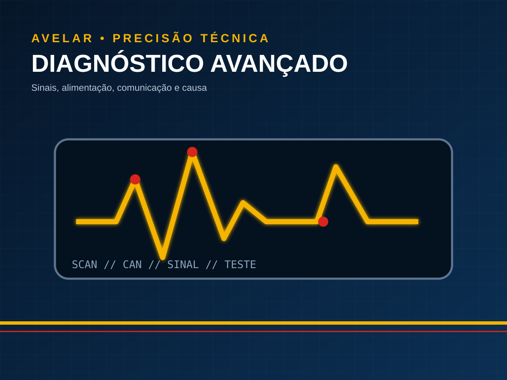

Injeção eletrônica
Scanner, leitura de parâmetros e códigos combinada com testes elétricos, sensores e atuadores antes da troca de componentes.
Injeção eletrônica em Passos →Da falha no veículo ao teste em bancada, cada serviço parte do sintoma, da aplicação e da confirmação técnica.

Scanner, leitura de parâmetros e códigos combinada com testes elétricos, sensores e atuadores antes da troca de componentes.
Injeção eletrônica em Passos →Diagnóstico e reparo de climatização, incluindo pressão, temperatura, compressor, ventilação e parte elétrica/eletrônica conforme aplicação.
Ar-condicionado em Passos →Avaliação de centrais, alimentação, conectores, testes em bancada, reparo e programação quando tecnicamente necessários.
Reparo de módulos e ECU →Identificação de ECU, leitura e calibração eletrônica conforme aplicação, condição mecânica e objetivo do veículo.
Remap automotivo em Passos →Diagnóstico eletrônico, módulos ECU/PLD, programação, climatização e aplicações agrícolas conforme o sistema atendido.
Eletrônica de caminhões e linha pesada →Partida, carga, alimentação, chicotes, fusíveis, relés, iluminação e falhas elétricas conforme o sistema do veículo.
Ver casos de auto elétrica →Um caso pode pertencer a mais de uma categoria quando combina especialidades, facilitando encontrar exemplos de remap, ar-condicionado, módulos, caminhões e diagnóstico.
Envie modelo, ano, motorização e o que o veículo ou equipamento está apresentando.